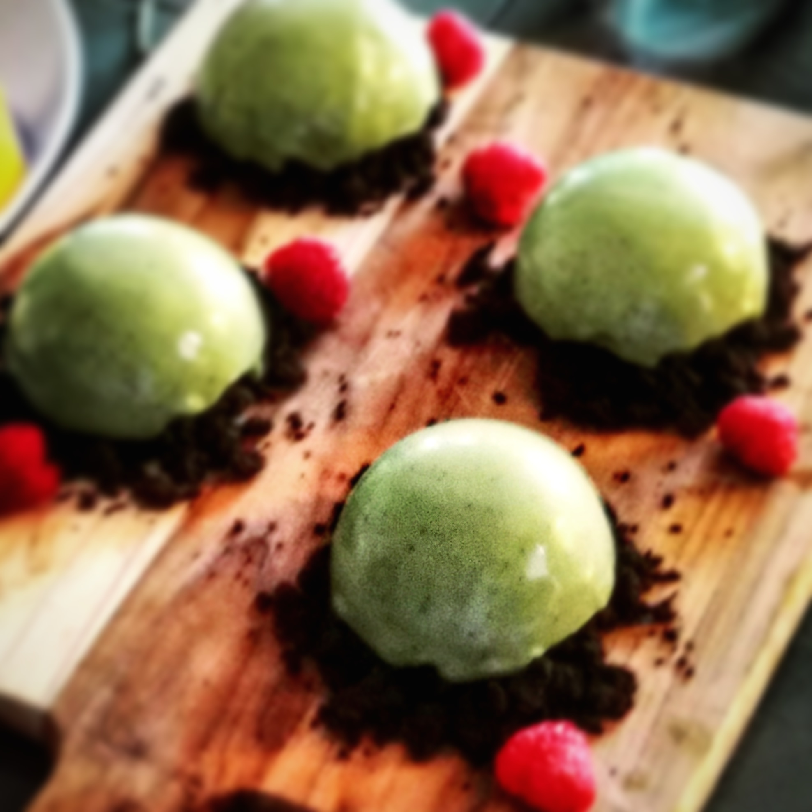

Matcha Domes

This amazing Japanese inspired dessert is sure to impress your pallette. The earthly flavors of the matcha combined with the chocolate from the mousse is a great textural experience.
Ingredients:
- Dark Chocolate
- Butter
- Salt
- Gelatin Sheets
- Heavy Cream
- Vanilla Extract
- Sugar
- Matcha Powder
Steps:
- Melt the chocolate and butter over a bain marie. When melted, set aside.
- Whip the heavy cream into stiff peaks, then slowly fold in the chocolate.
- Melt the gelatin sheets and add in the mix with vanilla.
- Put the mousse into round molds and freeze for at least 10 hours.
- Make the matcha glaze by adding gelatin sheets, matcha powder, heavy cream and sugar in a pot and stir until the matcha powder has dissolved.
- When the matcha glaze mixture has reached 37 degrees celcius, take the domes out of the freezer and glaze them.